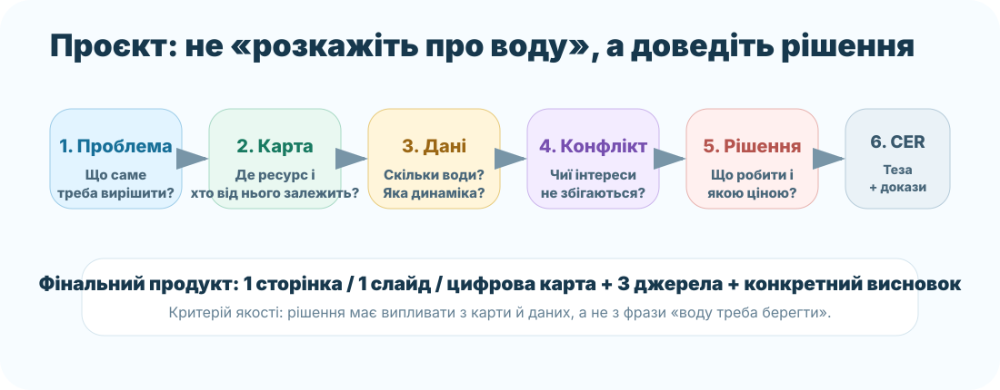
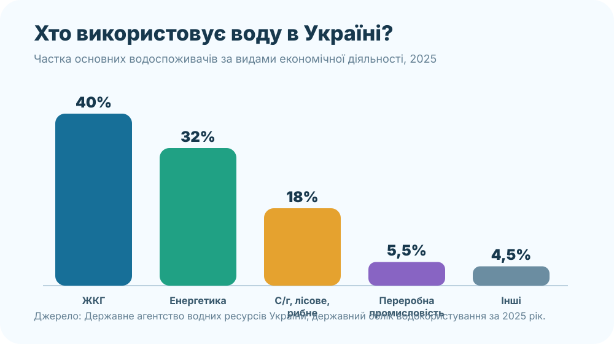

0. Проєктний бриф — 3 хв

«Вода дуже важлива. Її треба берегти». Це правда, але доказів тут приблизно стільки ж, скільки води в сухому маркері.
«У кейсі X основний конфлікт між A і B. Дані показують…, карта показує… Тому пропонуємо… Ефект перевіримо за показником…»
1. Оберіть дослідницький трек — 4 хв
🌿 Трек А. Мала річка
Питання: як люди використовують малу річку свого району і де виникає найбільший конфлікт між користю та станом екосистеми?
Приклад для Запоріжжя: Мокра Московка або інша доступна для дослідження мала річка. Не вигадуйте якість води — перевіряйте джерела.
💧 Трек B. Вода Запорізької області
Питання: які види водокористування конкурують за ресурс: питне водопостачання, промисловість, енергетика, зрошення, екосистеми?
Потрібно показати не список, а пріоритети в умовах дефіциту.
⚡ Трек C. Вода як енергія й ресурс
Питання: коли гідроенергетика або зрошення дають суспільству користь, а коли створюють занадто великі екологічні чи водогосподарські ризики?
Порівняйте щонайменше дві вигоди й два ризики.
2. Банк реальних доказів — 7 хв

води забрано з природних джерел в Україні у 2025 році. З них 4 987,5 млн м³ — прісна вода.
забору припало на басейн Дніпра — найбільше серед річкових басейнів.
забруднених стічних вод скинуто у поверхневі водні об’єкти; 153,2 млн м³ із них — у басейні Дніпра.
Держводагентство: облік 2025Державний водний кадастрClimate & Water
3. Просторовий доказ — 5 хв
Геопортал «Водні ресурси України»OpenStreetMapNASA Worldview
4. Рішення під обмеженнями — 8 хв
5. Зберіть проєкт на одній сторінці — 6 хв
6. Джерела: мінімум три
7. Захист — 2 хв + рубрика 12 балів
| Критерій | 3 бали | 2 бали | 1 бал |
|---|---|---|---|
| Карта й джерела | Є конкретна територія, карта і ≥3 надійні джерела | Є карта, але джерела/локалізація неповні | Загальні слова без просторового доказу |
| Дані | ≥2 числові докази правильно пояснено | Дані є, але зв’язок із тезою слабкий | Чисел немає або вони без джерела |
| Механізм | Пояснено причинний зв’язок і конфлікт водокористувачів | Є часткове пояснення | Лише перелік фактів |
| Рішення | Конкретне, реалістичне, має показник перевірки | Рішення реалістичне, але нечітко перевіряється | «Берегти воду» без механізму |
8. Домашнє завдання — завершити продукт
Ваш прогрес
0 із 8 ключових елементів заповнено.